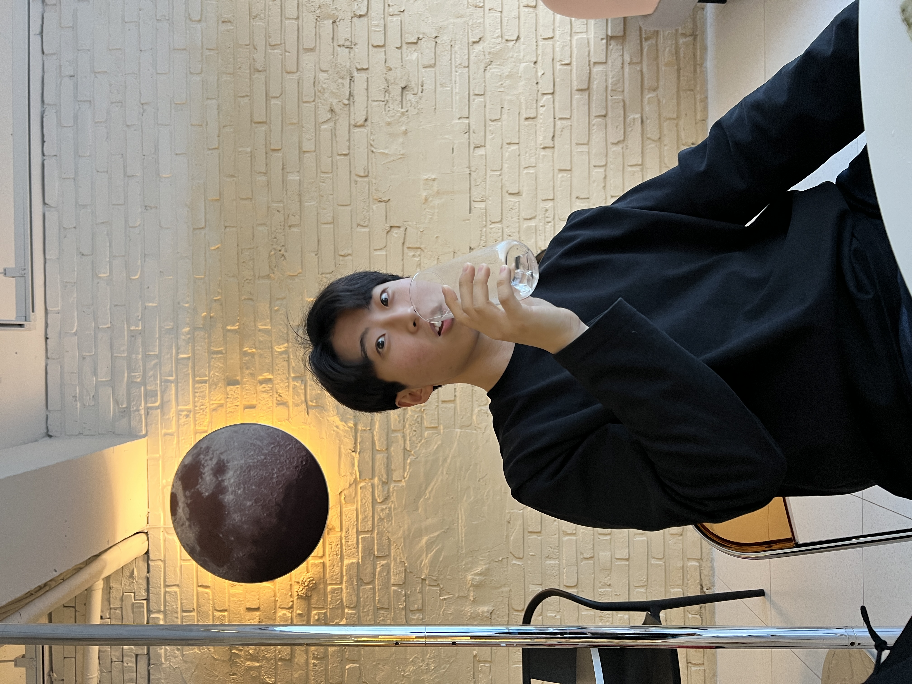

- 관심 직무
- 강점
- 취미
곽수경

곽수경은 강가(수)의 옥돌(경)이라는 의미로 증조할아버지께서 빛나는 사람이 되라는 의미로 지어주신 이름입니다.
저는 사람들을 만나는 것을 좋아하며 무엇이든 만들어내는 것, 결과물을 만드는 것을 좋아합니다.
저는 통통튀는 아이디어를 가지고 있기보단 실행하고 디테일한 것들을 정해가는 것을 좋아합니다.
행사를 기획하고 진행하여 그곳에 참석한 사람들이 즐거운 모습을 보는 것을 좋아합니다.
그리고 사람들의 수요, 니즈가 있는 서비스가 기획되어 있을 때 그것을 사람들이 보고 이용할 수 있도록 하는 웹 페이지나 어플을 만들어 사람들에게 즐거움을 주고 싶습니다.